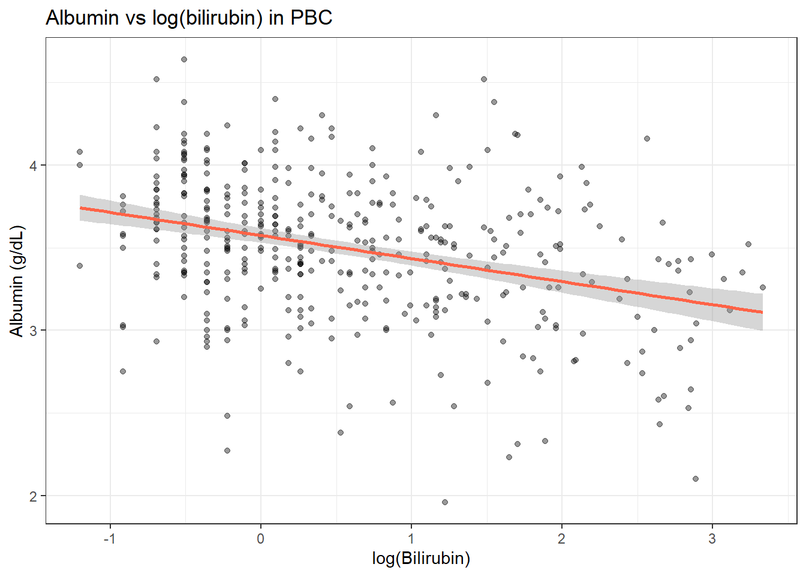
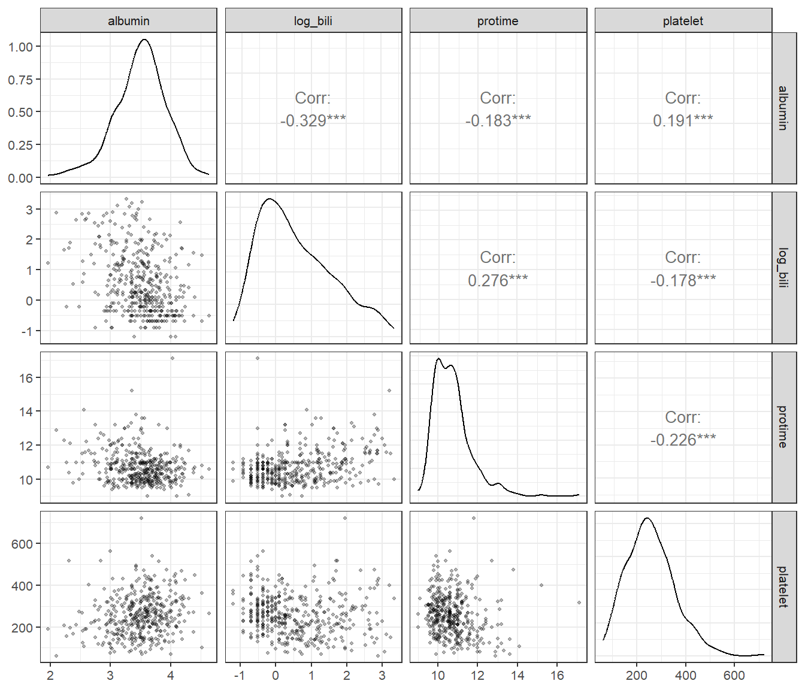
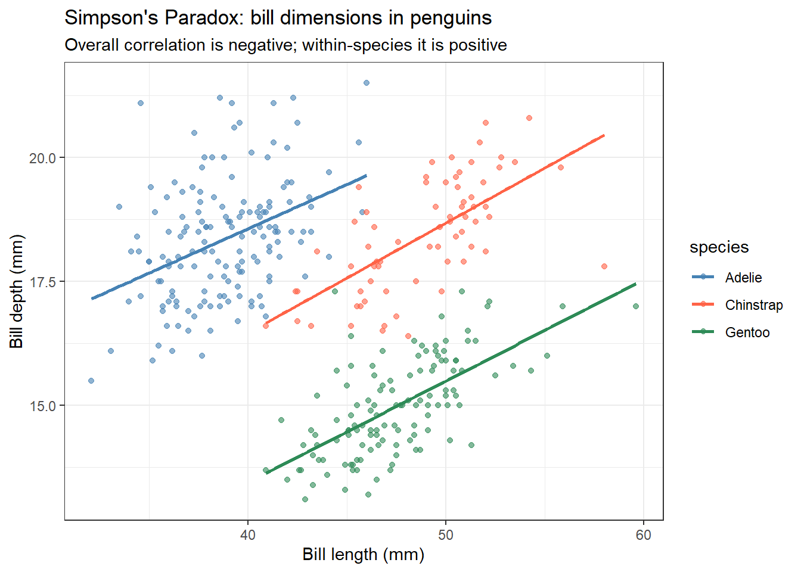

pbc <- survival::pbc %>%
as_tibble() %>%
janitor::clean_names() %>%
filter(!is.na(albumin), !is.na(bili), !is.na(protime), !is.na(platelet))15 Correlation and Association
15.1 When Do You Use This?
Before fitting a regression model, you want to understand the pairwise relationships in your data: does albumin decline as bilirubin rises? Is there a linear relationship between platelet count and prothrombin time? Correlation quantifies the direction and strength of these relationships before you commit to a model.
15.2 Learning Objectives
After completing this session you will be able to:
- Distinguish Pearson, Spearman, and Kendall correlation coefficients and choose appropriately
- Calculate correlations and test their significance in R
- Visualise correlation matrices with
GGally::ggpairs() - Explain why correlation does not imply causation
- Recognise spurious correlation from confounding
15.3 Background: Measuring Linear Association
Pearson’s r measures the strength and direction of a linear relationship between two continuous variables:
\[r = \frac{\sum (x_i - \bar{x})(y_i - \bar{y})}{\sqrt{\sum (x_i - \bar{x})^2 \sum (y_i - \bar{y})^2}}\]
\(r\) ranges from -1 (perfect negative) to +1 (perfect positive). \(r = 0\) means no linear association.
When not to use Pearson’s r: - One or both variables are heavily skewed or contain outliers - The relationship is clearly non-linear (e.g., exponential) - Data are ordinal (ranked categories)
Spearman’s \(\rho\) and Kendall’s \(\tau\) work on the ranks of the data. They detect any monotonic relationship (not just linear) and are robust to outliers.
| Coefficient | Assumes | Best for |
|---|---|---|
| Pearson \(r\) | Linearity, approximately bivariate normal | Continuous, symmetric variables |
| Spearman \(\rho\) | Monotonic relationship | Skewed data, small n, ordinal |
| Kendall \(\tau\) | Monotonic relationship | Small n, many ties |
15.4 Worked Example 1: Clinical Data (PBC)
15.4.1 Pairwise Correlations
# Pearson correlation: albumin vs bilirubin
cor.test(pbc$albumin, log(pbc$bili), method = "pearson")
Pearson's product-moment correlation
data: pbc$albumin and log(pbc$bili)
t = -7.2097, df = 403, p-value = 2.791e-12
alternative hypothesis: true correlation is not equal to 0
95 percent confidence interval:
-0.4215627 -0.2487526
sample estimates:
cor
-0.3380035 # Spearman: more appropriate given bilirubin's skew
cor.test(pbc$albumin, pbc$bili, method = "spearman")Warning in cor.test.default(pbc$albumin, pbc$bili, method = "spearman"): Cannot
compute exact p-value with ties
Spearman's rank correlation rho
data: pbc$albumin and pbc$bili
S = 14718822, p-value = 1.049e-11
alternative hypothesis: true rho is not equal to 0
sample estimates:
rho
-0.329419 tidy(cor.test(pbc$albumin, pbc$bili, method = "spearman"))Warning in cor.test.default(pbc$albumin, pbc$bili, method = "spearman"): Cannot
compute exact p-value with ties# A tibble: 1 × 5
estimate statistic p.value method alternative
<dbl> <dbl> <dbl> <chr> <chr>
1 -0.329 14718822. 1.05e-11 Spearman's rank correlation rho two.sided Why log-transform before Pearson? Bilirubin is heavily right-skewed. Pearson’s r is sensitive to extreme values; log-transforming makes the relationship more linear and the correlation estimate more meaningful.
15.4.2 Scatter Plot with Smooth
pbc %>%
ggplot(aes(x = log(bili), y = albumin)) +
geom_point(alpha = 0.4, size = 1.5) +
geom_smooth(method = "lm", color = "tomato", se = TRUE) +
labs(title = "Albumin vs log(bilirubin) in PBC",
x = "log(Bilirubin)", y = "Albumin (g/dL)") +
theme_bw()`geom_smooth()` using formula = 'y ~ x'
15.4.3 Correlation Matrix
pbc_num <- pbc %>%
mutate(log_bili = log(bili)) %>%
select(albumin, log_bili, protime, platelet)
cor(pbc_num, use = "complete.obs", method = "spearman") %>%
round(2) albumin log_bili protime platelet
albumin 1.00 -0.33 -0.18 0.19
log_bili -0.33 1.00 0.28 -0.18
protime -0.18 0.28 1.00 -0.23
platelet 0.19 -0.18 -0.23 1.00ggpairs(
pbc_num,
lower = list(continuous = wrap("points", alpha = 0.3, size = 0.8)),
upper = list(continuous = wrap("cor", method = "spearman")),
diag = list(continuous = wrap("densityDiag"))
) +
theme_bw(base_size = 10)Warning in cor.test.default(x, y, method = method): Cannot compute exact
p-value with ties
Warning in cor.test.default(x, y, method = method): Cannot compute exact
p-value with ties
Warning in cor.test.default(x, y, method = method): Cannot compute exact
p-value with ties
Warning in cor.test.default(x, y, method = method): Cannot compute exact
p-value with ties
Warning in cor.test.default(x, y, method = method): Cannot compute exact
p-value with ties
Warning in cor.test.default(x, y, method = method): Cannot compute exact
p-value with ties
GGally::ggpairs() gives you scatterplots (lower triangle), Spearman correlations (upper triangle), and density plots (diagonal) in one call.
15.4.4 Testing Multiple Correlations
# tidy approach: all pairs
pbc_num %>%
pivot_longer(-albumin, names_to = "variable", values_to = "value") %>%
group_by(variable) %>%
summarise(
r = cor(albumin, value, use = "complete.obs", method = "spearman"),
tidy(cor.test(albumin, value, method = "spearman"))
) %>%
select(variable, r, p.value) %>%
mutate(p_adj = p.adjust(p.value, method = "holm"))Warning: There were 3 warnings in `summarise()`.
The first warning was:
ℹ In argument: `tidy(cor.test(albumin, value, method = "spearman"))`.
ℹ In group 1: `variable = "log_bili"`.
Caused by warning in `cor.test.default()`:
! Cannot compute exact p-value with ties
ℹ Run `dplyr::last_dplyr_warnings()` to see the 2 remaining warnings.# A tibble: 3 × 4
variable r p.value p_adj
<chr> <dbl> <dbl> <dbl>
1 log_bili -0.329 1.05e-11 3.15e-11
2 platelet 0.191 1.09e- 4 2.18e- 4
3 protime -0.183 2.14e- 4 2.18e- 415.5 Worked Example 2: Animal Data (palmerpenguins)
The penguin dataset provides a clean example of correlation within groups versus across groups � a useful lesson about confounding.
library(palmerpenguins)Warning: package 'palmerpenguins' was built under R version 4.3.3penguins_clean <- penguins %>%
drop_na(bill_length_mm, bill_depth_mm, body_mass_g, flipper_length_mm, species)# Overall correlation (ignoring species)
cor.test(penguins_clean$bill_length_mm, penguins_clean$bill_depth_mm,
method = "pearson")
Pearson's product-moment correlation
data: penguins_clean$bill_length_mm and penguins_clean$bill_depth_mm
t = -4.4591, df = 340, p-value = 1.12e-05
alternative hypothesis: true correlation is not equal to 0
95 percent confidence interval:
-0.3328072 -0.1323004
sample estimates:
cor
-0.2350529 # Within-species correlations
penguins_clean %>%
group_by(species) %>%
summarise(
r = cor(bill_length_mm, bill_depth_mm, method = "pearson"),
n = n()
)# A tibble: 3 × 3
species r n
<fct> <dbl> <int>
1 Adelie 0.391 151
2 Chinstrap 0.654 68
3 Gentoo 0.643 123penguins_clean %>%
ggplot(aes(x = bill_length_mm, y = bill_depth_mm, color = species)) +
geom_point(alpha = 0.6) +
geom_smooth(method = "lm", se = FALSE) +
scale_color_manual(values = c("steelblue", "tomato", "seagreen")) +
labs(title = "Simpson's Paradox: bill dimensions in penguins",
subtitle = "Overall correlation is negative; within-species it is positive",
x = "Bill length (mm)", y = "Bill depth (mm)") +
theme_bw()`geom_smooth()` using formula = 'y ~ x'
This is Simpson’s Paradox: the overall (marginal) correlation is negative, but within each species it is positive. The species variable confounds the relationship. Always check whether a third variable explains an unexpected correlation.
15.6 Where to Find Data Like This
PBC dataset: survival::pbc � multiple continuous clinical variables (albumin, bilirubin, protime, platelet, etc.) with known clinical correlations.
palmerpenguins: palmerpenguins::penguins � body measurements with a clear grouping variable for demonstrating confounding.
NHANES: nhanesA or nhanes package � population-level continuous variables (blood pressure, cholesterol, BMI, age).
15.7 What Can Go Wrong
Correlation ? causation Two variables can correlate strongly because they share a common cause, not because one causes the other. Always think mechanistically.
Using Pearson’s r with skewed data or outliers A single extreme outlier can drive a large r. Always plot your data before computing a correlation. Use Spearman’s ? for robustness.
Multiple comparisons in correlation matrices Testing all \(p(p-1)/2\) pairs from a correlation matrix inflates Type I error. Adjust p-values with p.adjust() when reporting multiple correlations.
Range restriction If you select subjects based on one of the variables (e.g., only patients with bilirubin > 5), the correlation in that subset will differ from the population correlation � usually attenuated.
Ecological correlation Correlations computed on group averages (e.g., countries, hospitals) are typically stronger than individual-level correlations. Do not interpret ecological correlations as individual-level associations.
15.8 Exercises
15.8.1 Exercise 1 (Guided): Albumin and Prothrombin Time
- Plot albumin vs prothrombin time in
pbc. Does the relationship look linear? - Compute Pearson and Spearman correlations. Which is higher? Why?
- Compute Pearson correlation after log-transforming prothrombin time.
- Report: r, 95% CI, and p-value for your chosen method.
Exercise 1: Solution
# 1. Plot
pbc %>%
ggplot(aes(x = protime, y = albumin)) +
geom_point(alpha = 0.4, size = 1.5) +
geom_smooth(method = "loess", color = "tomato") +
labs(x = "Prothrombin time (s)", y = "Albumin (g/dL)") + theme_bw()`geom_smooth()` using formula = 'y ~ x'
# 2. Both correlations
tidy(cor.test(pbc$albumin, pbc$protime, method = "pearson"))# A tibble: 1 × 8
estimate statistic p.value parameter conf.low conf.high method alternative
<dbl> <dbl> <dbl> <int> <dbl> <dbl> <chr> <chr>
1 -0.198 -4.05 0.0000604 403 -0.290 -0.102 Pearson… two.sided tidy(cor.test(pbc$albumin, pbc$protime, method = "spearman"))Warning in cor.test.default(pbc$albumin, pbc$protime, method = "spearman"):
Cannot compute exact p-value with ties# A tibble: 1 × 5
estimate statistic p.value method alternative
<dbl> <dbl> <dbl> <chr> <chr>
1 -0.183 13097381. 0.000214 Spearman's rank correlation rho two.sided # 3. After log transform
tidy(cor.test(pbc$albumin, log(pbc$protime), method = "pearson"))# A tibble: 1 × 8
estimate statistic p.value parameter conf.low conf.high method alternative
<dbl> <dbl> <dbl> <int> <dbl> <dbl> <chr> <chr>
1 -0.203 -4.17 0.0000370 403 -0.295 -0.108 Pearson… two.sided 15.8.2 Exercise 2 (Semi-guided): Penguin Correlation Matrix
Using palmerpenguins::penguins, produce a correlation matrix for the four continuous measurements.
- Compute a Spearman correlation matrix using
cor(). - Plot with
ggpairs(). - Run the analysis separately for each species. Do any correlations change sign?
Exercise 2: Solution
peng <- penguins %>% drop_na()
# 1. Spearman matrix
peng_num <- peng %>% select(bill_length_mm, bill_depth_mm, flipper_length_mm, body_mass_g)
cor(peng_num, method = "spearman") %>% round(2) bill_length_mm bill_depth_mm flipper_length_mm body_mass_g
bill_length_mm 1.00 -0.21 0.67 0.58
bill_depth_mm -0.21 1.00 -0.52 -0.43
flipper_length_mm 0.67 -0.52 1.00 0.84
body_mass_g 0.58 -0.43 0.84 1.00# 2. ggpairs
ggpairs(peng_num,
upper = list(continuous = wrap("cor", method = "spearman")),
lower = list(continuous = wrap("points", alpha = 0.3, size = 0.8))) +
theme_bw()Warning in cor.test.default(x, y, method = method): Cannot compute exact
p-value with ties
Warning in cor.test.default(x, y, method = method): Cannot compute exact
p-value with ties
Warning in cor.test.default(x, y, method = method): Cannot compute exact
p-value with ties
Warning in cor.test.default(x, y, method = method): Cannot compute exact
p-value with ties
Warning in cor.test.default(x, y, method = method): Cannot compute exact
p-value with ties
Warning in cor.test.default(x, y, method = method): Cannot compute exact
p-value with ties
# 3. By species
peng %>%
group_by(species) %>%
summarise(r_bl_bd = cor(bill_length_mm, bill_depth_mm, method = "spearman"))# A tibble: 3 × 2
species r_bl_bd
<fct> <dbl>
1 Adelie 0.355
2 Chinstrap 0.672
3 Gentoo 0.65215.8.3 Exercise 3 (Open-ended)
Using your own data, identify two continuous variables you expect to be related. Plot them, compute the appropriate correlation, and test the significance. Write a two-sentence result. Now think of a third variable that might confound the relationship � how would you check for it?
15.9 Comprehension Check
- When should you use Spearman’s ? instead of Pearson’s r?
- You compute r = 0.85, p < 0.001 between two blood biomarkers. Can you conclude one biomarker causes changes in the other?
- A correlation matrix of 10 variables has 45 pairwise tests. Three are significant at p < 0.05. Is this noteworthy?
- You observe a strong negative correlation between overall bill length and bill depth in penguins, but a positive correlation within each species. What is this called, and what causes it?
- You want to correlate a Likert-scale pain score (1�10) with serum CRP. Which coefficient should you use?
Answers
- Use Spearman when (1) one or both variables are skewed or contain outliers, (2) the relationship is monotonic but not necessarily linear, or (3) one variable is ordinal.
- No. Correlation describes the strength of association, not direction of causation. The two biomarkers may both reflect a third underlying process (confounding), or the direction of causality could run either way.
- Not necessarily. With 45 tests at a = 0.05, you expect 45 � 0.05 = 2.25 false positives by chance. Three significant results is only slightly above the expected false-positive count. Adjust for multiple testing and scrutinise the findings carefully.
- This is Simpson’s Paradox. The species variable is a confounder: different species have distinct bill morphologies, and within each species the relationship is positive. The overall correlation is dominated by between-species variation, which moves in the opposite direction.
- Spearman’s ? (or Kendall’s t). Pain scores are ordinal � the difference between 4 and 5 is not necessarily the same as between 7 and 8 � so rank-based methods are more appropriate than Pearson’s r.
15.10 Further Reading
- Bland (2015) — Correlation in An Introduction to Medical Statistics
- Dalgaard (2008) — Chapter on correlation and regression
?cor.testin R � documentation covering all three methodsGGally::ggpairs()vignette for visualising multivariate relationships
Bland, Martin. 2015. An Introduction to Medical Statistics. 4th ed. Oxford University Press.
Dalgaard, Peter. 2008. Introductory Statistics with r. 2nd ed. Springer.